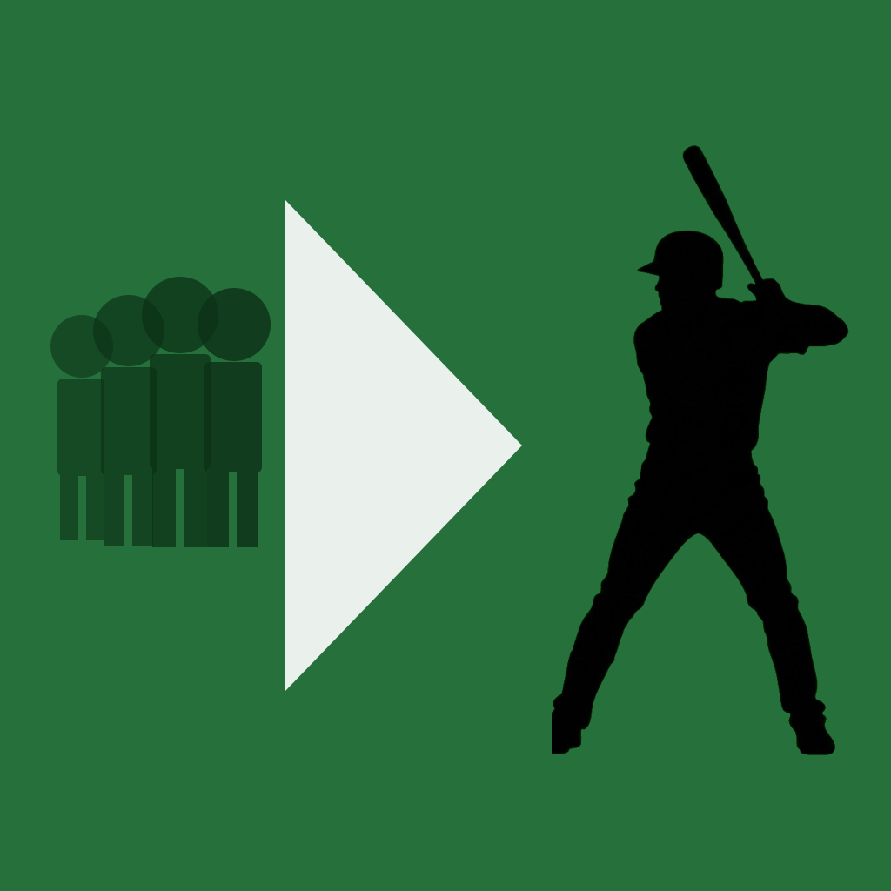

Find the minor league prospects who meet your standards.
ProspectFilter searches every MiLB player against the stat thresholds you set. Define your own filters — OBP, ERA, K%, SB, whatever you care about — and instantly see which prospects qualify. Search across all of affiliated ball or zoom in on a single organization, level, or age group.
For questions, bug reports, or feedback, email:
nicolasrichards@me.com
ProspectFilter does not collect, store, or share any personal data. No analytics, no tracking, no account required.
Player and stat data is fetched from the publicly available MLB Stats API (statsapi.mlb.com) for personal, non-commercial use.